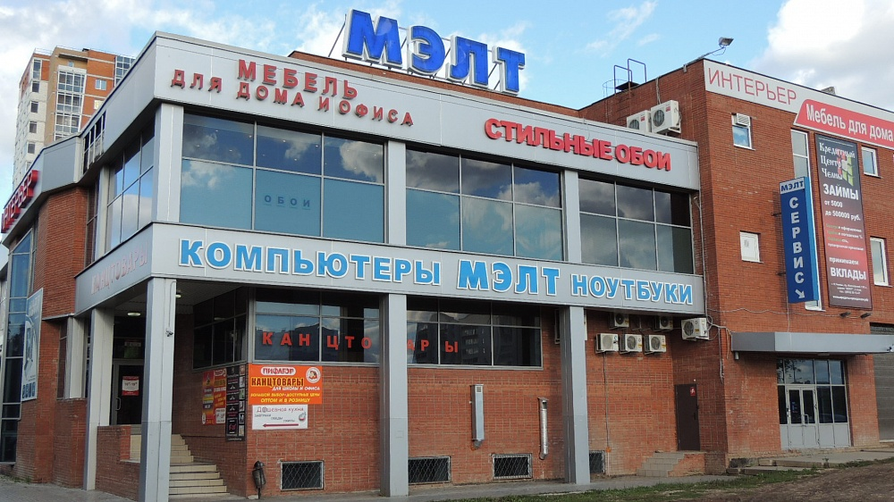

О компании
Группа компаний Проект офис состоит из более чем 20 производственных предприятий, которые располагаются на территории России.
Наши преимущества:
- Европейский дизайн. Широчайший выбор коллекций мебели от сдержанных классических форм до ультра-современного глянца.
- Гарантия качества. Качество мебели проверяется на всех этапах производства. Отлаженная система работы позволяет обеспечить гарантию на бесплатную замену или ремонт в течении двух лет, а также предоставить покупателям бессрочное сервисное обслуживание на протяжении всего срока эксплуатации мебели. 
- Удобство выбора. Заказать мебель можно и в интернет-магазине и в сети мебельных магазинов "Интерьер Офис"
- Сроки доставки. Благодаря наличию большого количества мебели на казанском складе, сроки доставки сокращаются до минимума. Вы можете получить мебель в день заказа.
- Изготовление мебели по индивидуальным проектам. Для удобства покупателей теперь в Набережных Челнах можно заказать мебель по индивидуальным размерам. Мебель на заказ изготавливается в Казани.
В целом предприятия насчитывают более 14 500 сотрудников. Объем переработки мебельной плиты составляет примерно 19 000 000 кв.м. Суммарно складские площади составляют порядка 400 000 кв.м. Масштаб компании обеспечивает широкий доступ к мебели производства Проект офис.
В Набережных Челнах Группа представлена торговой Компанией "Интерьер-офис". Нашим оптовым и розничным покупателям мы предлагаем широчайший ассортимент корпусной мебели Российского производства.
Современные технологии производства, высокая организация транспортной и складской логистики, позволяет обеспечить российских покупателей мебелью для дома, сертифицированной по самым высоким европейским стандартам экологической безопасности и качества по доступным ценам.
Проект офис - МЕБЕЛЬ ВСЕХ ПОКОЛЕНИЙ!